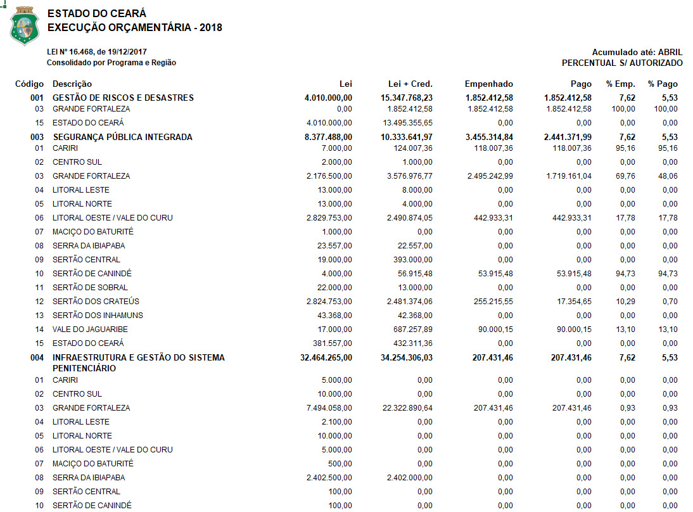
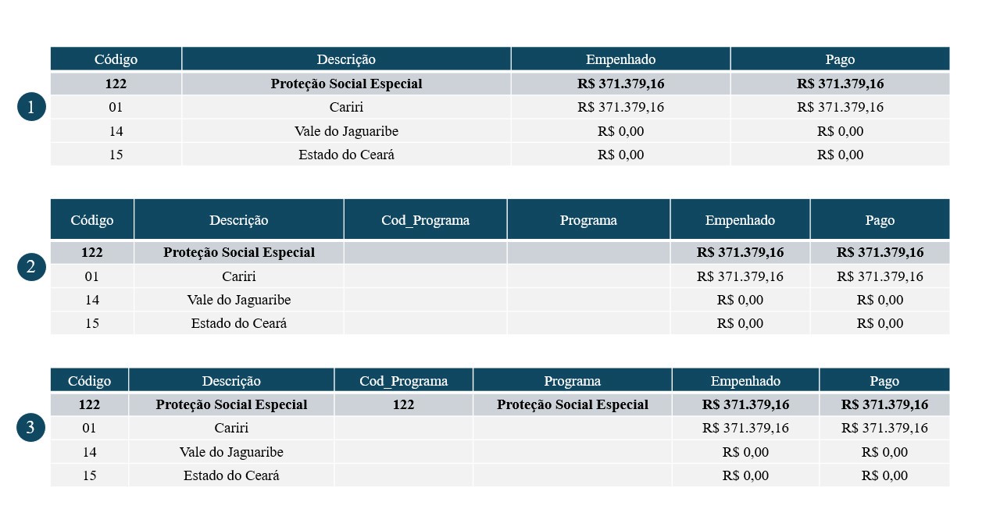
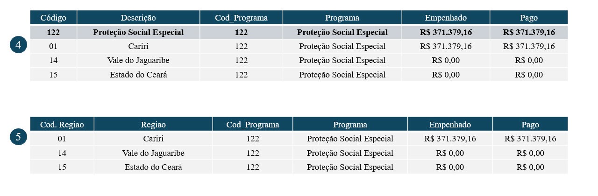

# =================== #
# === Bibliotecas === #
# =================== #
import pandas as pd
import osProcessamento de Dados - Investimentos Públicos por Programa e Região (Sefaz-CE)
Objetivo e Estrutura dos Dados
A rotina desenvolvida visa realizar realizar a devida padronização nos dados de investimentos por programa e/ou região que municiam os modelos trabalhados no projeto.
A imagem a seguir representa a estrutura dos dados disponibilizados em cada uma das planilhas baixadas na página do SIOF. Cada planilha representa um Tipo de investimento: Equipamentos, Obras e Total. Além disso a disponibilidade efetiva das informações se dá a partir do ano de 2016 em razão das informações no período de 2013 a 2015 não estarem disponíveis por região de planejamento. Tratado de informações efetivas, cada planilha contém oito campos. Destes, as colunas interesse são:
- Código
- Descrição
- Empenhado
- Pago
No campo Código, os investimentos estão classificados em Programa e Região. Assim cabe ao pesquisador definir como ele deseja o resultado final: apenas Programa, apenas Região ou ambos.
Levando em conta os pontos mencionados e que os dados são cumulativos, o objetivo dessa rotina é coletar as informações referentes Programa e/ou Região considerando somente os valores de investimentos Empenhado e Pago. Os tópicos a seguir detalham cada etapa da rotina.
Levando em conta os pontos mencionados e que os dados são cumulativos, o objetivo dessa rotina é coletar as informações referentes Programa e/ou Região considerando somente os valores de investimentos Empenhado e Pago. Os tópicos a seguir detalham cada etapa da rotina.

Bibliotecas e Arquivos na Pasta
Para executação dessa rotina, duas bibliotecas foram utilizadas:
- pandas: biblioteca para manipulação, limpeza e análise de dados.
- os: biblioteca padrão do python que permite interagir com o sistema operacional.
Importadas as devidas bibliotecas, os arquivos que serão trabalhados são devidamente mapeados por meio da função listdir da biblioteca os. Nessa etapa o usuário será questionado sobre como deseja a estrutura final dos dados: Programa, Região ou Programa/Região1.
# ========================================= #
# === Definindo o tipo de dado desejado === #
# ========================================= #
info_desired = ''
while info_desired not in {'p', 'r', 'pr', 'rp'}:
info_desired = input('Como você deseja a base de dados ? Use (P) para Programa, (R) para Região e (PR) para Programa e Região: ').strip().lower()
if info_desired not in {'p', 'r', 'pr', 'rp'}:
print('Opção inválida !')
elif info_desired == 'p':
print('Tratando as informações por Programa ...')
break
elif info_desired == 'r':
print('Tratando as informações por Região ...')
break
else:
print('Tratando as informações por Programa e Região ...')
breakUm dataframe, dataset_full, será gerado e irá armazenar todo o conjunto de dados final.
# ========================== #
# === Arquivos de Dados === #
# ========================== #
folder_files = os.listdir('Dataset/Investimentos_Programa_Regiao/')
dataset_full = pd.DataFrame()
# --- Prints --- #
print(*folder_files[0:10], sep = '\n')MAI_2024_EQUIP.xlsx
OUT_2022_EQUIP.xlsx
FEV_2015_OBRAS.XLS
JAN_2025_EQUIP.XLS
AGO_2021_TOTAL.xlsx
MAR_2018_EQUIP.xlsx
DEZ_2015_EQUIP.XLS
MAI_2017_EQUIP.xlsx
FEV_2021_TOTAL.xlsx
JUL_2022_TOTAL.xlsxProcessamento de Dados
Nesta etapa, uma estrutura loop é utilizada realizar a manipulação da rotina, onde cada etapa do tratamento é executado em cada conjunto de informações contidos nas planilhas.
Na leitura dos arquivos, somente as colunas de interesse são coletadas. Além disso, toda e qualquer linha nula é removida desse conjunto. Esse conjunto de dados remodelado recebe o nome de dataset.
Ao dataset são acrescidos quatro novos campos representando, respectivamente, i) periodo, ii) tipo de investimento, iii) ano, e iv) mês. Tais informações são extraídas justamente do nome de cada arquivo processado2. Esse procedimento se replica nos três casos possíveis, porém a uma pequena modificação é feita no cenário programa/região: os campos cod_programa e programa também são incluídos.
Após esses tratamentos iniciais, algumas linhas de comando são responsáveis por duas partes cruciais do procedimento. Para cada cenário um procedimento é adotado:
Na leitura dos arquivos, somente as colunas de interesse são coletadas. Além disso, toda e qualquer linha nula é removida desse conjunto. Esse conjunto de dados remodelado recebe o nome de dataset.
Ao dataset são acrescidos quatro novos campos representando, respectivamente, i) periodo, ii) tipo de investimento, iii) ano, e iv) mês. Tais informações são extraídas justamente do nome de cada arquivo processado2. Esse procedimento se replica nos três casos possíveis, porém a uma pequena modificação é feita no cenário programa/região: os campos cod_programa e programa também são incluídos.
Após esses tratamentos iniciais, algumas linhas de comando são responsáveis por duas partes cruciais do procedimento. Para cada cenário um procedimento é adotado:
Investimentos por Programa: As linhas que remetem a região de planjamento possuem dois caracteres. Assim, todas estas são identificadas e depois removidas do dataset, restando desse modo somente as informações referentes aos programas;
Investimentos por Região: Similar ao caso anterior, agora todas as linhas que representam programa é que são identificadas e removidas;
Programa/Região: Aqui o ajuste é um pouco mais refinado. Inicialmente as linhas que representam programa são identificadas. Os campos cod_programa e programa são alimentados, respectivamente com as informações dos campos Código e Descrição apenas nas linhas que foram identificadas. Em seguinda, utilizando a função ffill, as colunas cod_programa e programa de todas as linhas que por eliminação representam região, passam a receber o valor imediatamente anterior. Por fim, as linhas que representam programa são eliminadas. A imagem a seguir ajuda a entender o procedimento adotado:


Cada planilha que passa por esse procedimento representa um dataset que contribui para um dataframe final chamado dataset_full contendo todas as informações por ano, mês e tipo de investimento e função.# ============================== #
# === Processamento de Dados === #
# ============================== #
for x in range(len(folder_files)):
dataset = pd.read_excel(io = 'Dataset/Investimentos_Programa_Regiao/' + folder_files[x],
header = 10,
usecols= 'C, F, K, N',
names = ['codigo', 'descricao', 'empenhado', 'pago'],
dtype = {'codigo':str})
dataset = dataset.dropna()
# ---------------- #
# --- Programa --- #
# ---------------- #
if info_desired == 'p':
dataset = dataset.assign(periodo = folder_files[x][0:8],
tipo = folder_files[x][9:14],
ano = folder_files[x][4:8],
mes = folder_files[x][0:3])
# --- Substituições --- #
replacements = {'JAN':'01', 'FEV':'02', 'MAR':'03', 'ABR':'04', 'MAI':'05', 'JUN':'06', 'JUL':'07', 'AGO':'08', 'SET':'09', 'OUT':'10', 'NOV':'11', 'DEZ':'12'}
for old, new in replacements.items():
dataset['mes'] = dataset['mes'].replace(old,new)
# --- Identificando linhas de Região --- #
program_flag = dataset['codigo'].str.len() == 2
# --- Removendo casos onde a coluna codigo possui 2 caracteres --- #
dataset = dataset[~program_flag]
# --- Reordenando e renomeando --- #
dataset = dataset.reindex(columns = ['periodo', 'ano', 'mes', 'tipo', 'codigo', 'descricao', 'empenhado', 'pago'])
dataset.rename(columns = {'descricao':'programa', 'codigo':'cod_programa'}, inplace = True)
# -------------- #
# --- Região --- #
# -------------- #
if info_desired == 'r':
dataset = dataset.assign(periodo = folder_files[x][0:8],
tipo = folder_files[x][9:14],
ano = folder_files[x][4:8],
mes = folder_files[x][0:3])
# --- Substituições --- #
replacements = {'JAN':'01', 'FEV':'02', 'MAR':'03', 'ABR':'04', 'MAI':'05', 'JUN':'06', 'JUL':'07', 'AGO':'08', 'SET':'09', 'OUT':'10', 'NOV':'11', 'DEZ':'12'}
for old, new in replacements.items():
dataset['mes'] = dataset['mes'].replace(old,new)
# --- Identificando linhas de Programa --- #
region_flag = dataset['codigo'].str.len() == 3
# --- Removendo casos onde a coluna código possui 3 caracteres --- #
dataset = dataset[~region_flag]
# --- Reordenando e renomeando --- #
dataset = dataset.reindex(columns = ['periodo', 'ano', 'mes', 'tipo', 'codigo', 'descricao', 'empenhado', 'pago'])
dataset.rename(columns = {'descricao':'regiao', 'codigo':'cod_regiao'}, inplace = True)
# --------------------------- #
# --- Programa and Região --- #
# --------------------------- #
if info_desired == 'rp' or info_desired == 'pr':
dataset = dataset.assign(cod_programa = None,
programa = None, # Add empty column programa
periodo = folder_files[x][0:8],
tipo = folder_files[x][9:14],
ano = folder_files[x][4:8],
mes = folder_files[x][0:3])
# --- Substituições --- #
replacements = {'JAN':'01', 'FEV':'02', 'MAR':'03', 'ABR':'04', 'MAI':'05', 'JUN':'06', 'JUL':'07', 'AGO':'08', 'SET':'09', 'OUT':'10', 'NOV':'11', 'DEZ':'12'}
for old, new in replacements.items():
dataset['mes'] = dataset['mes'].replace(old,new)
# --- Identificando linhas de Programa --- #
program_flag = dataset['codigo'].str.len() == 3
# --- Preenchendo colunas --- #
dataset.loc[program_flag, 'cod_programa'] = dataset['codigo']
dataset.loc[program_flag, 'programa'] = dataset['descricao']
dataset[['cod_programa','programa']] = dataset[['cod_programa','programa']].ffill()
# --- Removendo casos onde a coluna código possui 3 caracteres --- #
dataset = dataset[~program_flag]
# --- Reordenando e renomeando --- #
dataset = dataset.reindex(columns = ['periodo', 'ano', 'mes', 'tipo', 'codigo', 'descricao', 'cod_programa', 'programa', 'empenhado', 'pago'])
dataset.rename(columns = {'descricao':'regiao', 'codigo':'cod_regiao'}, inplace = True)
# --------------------------- #
# --- Empilhando os dados --- #
# --------------------------- #
if x == 0:
dataset_full = dataset
else:
dataset_full = pd.concat([dataset_full, dataset])
# --- Prints --- #
print(dataset_full.loc[:, ~dataset_full.columns.isin(['regiao', 'programa'])].head(10)) periodo ano mes tipo cod_regiao cod_programa empenhado pago
2 MAI_2024 2024 05 EQUIP 03 101 0.0 0.0
3 MAI_2024 2024 05 EQUIP 15 101 0.0 0.0
6 MAI_2024 2024 05 EQUIP 15 102 0.0 0.0
8 MAI_2024 2024 05 EQUIP 01 112 0.0 0.0
9 MAI_2024 2024 05 EQUIP 02 112 0.0 0.0
10 MAI_2024 2024 05 EQUIP 03 112 0.0 0.0
11 MAI_2024 2024 05 EQUIP 04 112 0.0 0.0
12 MAI_2024 2024 05 EQUIP 05 112 0.0 0.0
13 MAI_2024 2024 05 EQUIP 06 112 0.0 0.0
14 MAI_2024 2024 05 EQUIP 07 112 0.0 0.0Ajustes para Dados Cumulativos
Nessa seção da rotina, o objetivo principal é chegar ao investimento efetivo que se deu em determinado período. Dessa forma, a ideia é sempre tomar a diferença entre os periodos adotando a seguinte regra:
\[ invest_t = invest\_acum_t - invest\_acum_t-1 \qquad(t \neq 1) \]
É interessante ressaltar que para chegar nesse cálculo o dataframe dataset_full precisa estar devidamente ordenado, evitando assim variações entre períodos, tipos de investimento programas e regiões diferentes. Em vista dessa necessidade, a função sort_values desempenha esse papel de ordenamento a depender do cenário selecionado pelo pesquisador:
Investimentos por Programa: Código do Programa, Tipo, Ano e Mês;
Investimentos por Região: Código da Região, Tipo, Ano e Mês;
Programa/Região: Tipo, Código da Região, Código do Programa, Ano e Mês;
No dataset_full duas novas colunas representando o investimento mensal, empenhado_mensal e pago_mensal, são adicionadas, ao passo que os campos empenhado e pago passam a se chamar empenhado_acumulado e pago_acumulado.
Para valores que representam o mês de janeiro, uma regra em looping foi gerada. Uma vez que os dados estão devidamente ordenados e não há possibilidade alguma de conflito de informações, ao comparar a linha atual com a anterior, se a diferença entre os meses for superior a 1, então tem-se a confirmação de um cenário onde a linha atual representa janeiro e a linha anterior representa dezembro do ano anterior. Nesse caso, a rotina entende que o valor mensal é o mesmo valor acumulado. Nos demais cenários a regra padrão é adotada. O infográfico a seguir ajuda a compreender a regra adotada.

# ======================================= #
# === Ajustes para Dados Cumulativos === #
# ======================================= #
# --- Ordenamento --- #
if info_desired == 'p':
dataset_full = dataset_full.sort_values(by = ['cod_programa', 'tipo', 'ano', 'mes']).reset_index(drop = True)
elif info_desired == 'r':
dataset_full = dataset_full.sort_values(by = ['cod_regiao', 'tipo', 'ano', 'mes']).reset_index(drop = True)
else:
dataset_full = dataset_full.sort_values(by = ['tipo', 'cod_regiao', 'cod_programa','ano', 'mes']).reset_index(drop = True)
# --- Ajuste nos dados cumulativos --- #
dataset_full['empenhado_mensal'] = dataset_full['empenhado'] - dataset_full['empenhado'].shift(1) # Inserting adjusted values
dataset_full['pago_mensal'] = dataset_full['pago'] - dataset_full['pago'].shift(1) # Inserting adjusted values
# --- Looping de ajuste para valores com datas truncadas --- #
for i in range(len(dataset_full)):
if i == 0:
dataset_full.loc[0, 'empenhado_mensal'] = dataset_full.loc[0, 'empenhado']
dataset_full.loc[0, 'pago_mensal'] = dataset_full.loc[0, 'pago']
if i != 0 and int(dataset_full.loc[i, 'mes']) - int(dataset_full.loc[i-1, 'mes']) != 1:
dataset_full.loc[i, 'empenhado_mensal'] = dataset_full.loc[i, 'empenhado']
dataset_full.loc[i, 'pago_mensal'] = dataset_full.loc[i, 'pago']
# --- Renomeando colunas --- #
dataset_full.rename(columns = {'empenhado':'empenhado_acumulado', 'pago':'pago_acumulado'}, inplace = True)
# --- Prints --- #
print(dataset_full.loc[:, ~dataset_full.columns.isin(['regiao', 'programa'])].head(10)) periodo ano mes tipo cod_regiao cod_programa empenhado_acumulado \
0 JUN_2012 2012 06 EQUIP 01 001 0.00
1 JUL_2012 2012 07 EQUIP 01 001 0.00
2 AGO_2012 2012 08 EQUIP 01 001 0.00
3 SET_2012 2012 09 EQUIP 01 001 0.00
4 OUT_2012 2012 10 EQUIP 01 001 0.00
5 NOV_2012 2012 11 EQUIP 01 001 0.00
6 DEZ_2012 2012 12 EQUIP 01 001 0.00
7 JUN_2012 2012 06 EQUIP 01 003 16516129.06
8 JUL_2012 2012 07 EQUIP 01 003 29763440.90
9 AGO_2012 2012 08 EQUIP 01 003 29763440.90
pago_acumulado empenhado_mensal pago_mensal
0 0.00 0.00 0.00
1 0.00 0.00 0.00
2 0.00 0.00 0.00
3 0.00 0.00 0.00
4 0.00 0.00 0.00
5 0.00 0.00 0.00
6 0.00 0.00 0.00
7 16516129.06 16516129.06 16516129.06
8 25005350.58 13247311.84 8489221.52
9 29336897.53 0.00 4331546.95 Armazenamento dos Resultados
Após todo o tratamento aplicado aos dados, a base final, dataset_full, recebe um último tratamento antes dos dados serem finalmente armazenados em um arquivo excel (.xlsx).
A base de dados final passa por uma espécie de “verticalização”3 das informações. As colunas de valores agora são dividídas em duas colunas. Enquanto os valores em si se alinham sob uma única coluna nomeada valor, uma coluna nomeada categoria é gerada para representar a categoria de investimento que está sendo tratada. Os campos período, ano, mês, tipo, código do programa, programa, código da região e região permanecem como variáveis categóricas.
Ao final da rotina é realizada uma limpeza no enviroment mantendo somente o dataframe final para visualização.
A base de dados final passa por uma espécie de “verticalização”3 das informações. As colunas de valores agora são dividídas em duas colunas. Enquanto os valores em si se alinham sob uma única coluna nomeada valor, uma coluna nomeada categoria é gerada para representar a categoria de investimento que está sendo tratada. Os campos período, ano, mês, tipo, código do programa, programa, código da região e região permanecem como variáveis categóricas.
Ao final da rotina é realizada uma limpeza no enviroment mantendo somente o dataframe final para visualização.
# ==================================== #
# === Armazenamento dos Resultados === #
# ==================================== #
if info_desired == 'p':
# --- Ajuste vertical na estrutura dos dados --- #
dataset_full = dataset_full.melt(
id_vars = ['periodo', 'ano', 'mes', 'tipo', 'cod_programa', 'programa'],
value_vars = ['empenhado_acumulado', 'pago_acumulado', 'empenhado_mensal', 'pago_mensal'],
var_name = 'categoria',
value_name = 'valor'
)
# --- Armazenando --- #
with pd.ExcelWriter(path = 'investimentos_siof_ceara_programa.xlsx', engine='xlsxwriter') as writer:
dataset_full.to_excel(excel_writer = writer, sheet_name = 'investimentos_programa', index = False)
# Rápida formatação na planilha
workbook = writer.book
worksheet = writer.sheets['investimentos_programa']
money_formatting = workbook.add_format({'num_format':'R$#,##0'})
worksheet.set_column('H:H', 15, money_formatting)
# --- Limpeza --- #
del(dataset, folder_files, i, info_desired, writer, x, new, old, replacements, program_flag, workbook, worksheet, money_formatting))
elif info_desired == 'r':
# --- Ajuste vertical na estrutura dos dados --- #
dataset_full = dataset_full.melt(
id_vars = ['periodo', 'ano', 'mes', 'tipo', 'cod_regiao', 'regiao'],
value_vars = ['empenhado_acumulado', 'pago_acumulado', 'empenhado_mensal', 'pago_mensal'],
var_name = 'categoria',
value_name = 'valor'
)
# --- Armazenando --- #
with pd.ExcelWriter(path = 'investimentos_siof_ceara_regiao.xlsx', engine='xlsxwriter') as writer:
dataset_full.to_excel(excel_writer = writer, sheet_name = 'investimentos_regiao', index = False)
# Rápida formatação na planilha
workbook = writer.book
worksheet = writer.sheets['investimentos_regiao']
money_formatting = workbook.add_format({'num_format':'R$#,##0'})
worksheet.set_column('H:H', 15, money_formatting)
# --- Limpeza --- #
del(dataset, folder_files, i, info_desired, writer, x, new, old, replacements, region_flag, workbook, worksheet, money_formatting)
else:
# --- Ajuste vertical na estrutura dos dados --- #
dataset_full = dataset_full.melt(
id_vars = ['periodo', 'ano', 'mes', 'tipo', 'cod_regiao', 'regiao', 'cod_programa', 'programa'],
value_vars = ['empenhado_acumulado', 'pago_acumulado', 'empenhado_mensal', 'pago_mensal'],
var_name = 'categoria',
value_name = 'valor'
)
# --- Armazenando --- #
with pd.ExcelWriter(path = 'investimentos_siof_ceara_programa_regiao.xlsx', engine='xlsxwriter') as writer:
dataset_full.to_excel(excel_writer = writer, sheet_name = 'investimentos_programa_regiao', index = False)
# Rápida formatação na planilha
workbook = writer.book
worksheet = writer.sheets['investimentos_programa_regiao']
money_formatting = workbook.add_format({'num_format':'R$#,##0'})
perc_formatting = workbook.add_format({'num_format':'0.0%'})
worksheet.set_column('J:J', 15, money_formatting)
# --- Limpeza --- #
del(dataset, folder_files, i, info_desired, writer, x, new, old, replacements, program_flag, workbook, worksheet, money_formatting)Footnotes
É válido mencionar que o usuário deve preencher corretamente a informação indicado qual tipo de análise deseja realizar. Caso contrário, a rotina acarretará em um erro.↩︎
A padronização dos nomes dos arquivos é ponto crucial na distinção das informações. Por exemplo, para os investimentos em Equipamentos no período de Março de 2020, teria-se MAR_2020_EQUIP.xlsx.↩︎